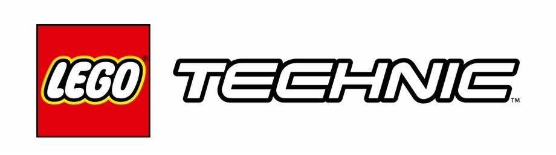

Lego Techinic
포르쉐 911 GT3 RS (42056)
부가티 시론 (42083)
람보르기니 시안 FKP 37 (42115)
레고 테크닉

레고 테크닉
은 1977년에 보다 정교한 레고 모델을 만들기 위해 만들어진 새로운 조립시스템으로 시작된 시리즈이다. 'EXPERT BUILD'로 처음 선보였으나 후에 'TECHNIC'으로 확립되었다. 단순한 브릭이 아닌 빔 축 기어등으로 구성되었으며 기존과 전혀 다른 레고의 모델이었으며 차후 공압과 전동 모터의 구동으로 더욱 실물과 가까워진다.